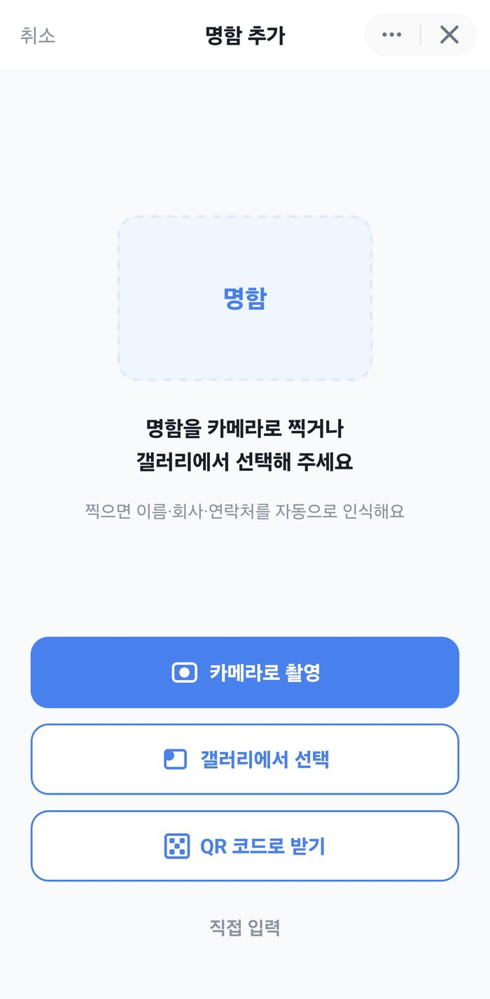
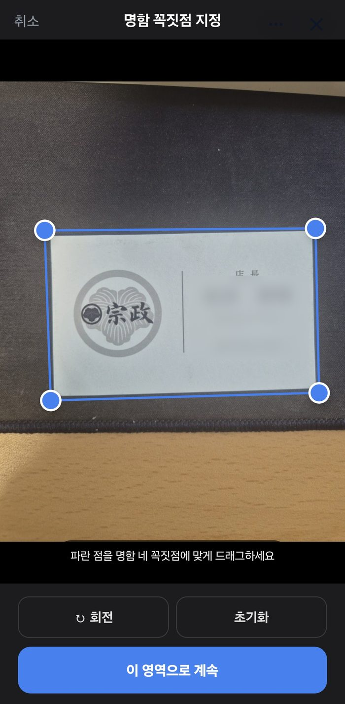
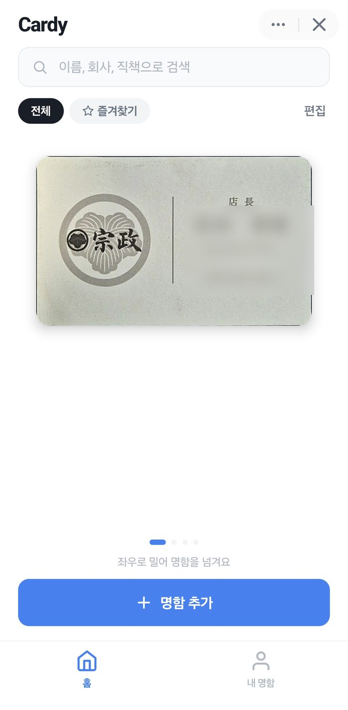
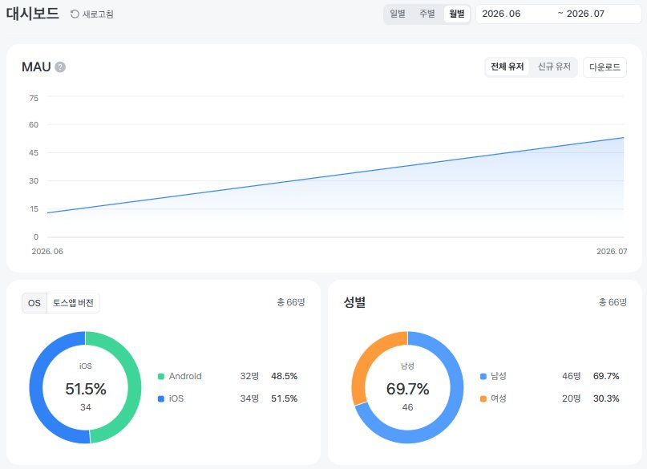

명함 촬영으로 이름·회사·연락처를 추출·보관하는 토스 미니앱




담당 역할
- 기획·디자인부터 개발·테스트·배포까지 단독 수행
- 명함 정보 추출, 이미지 전처리와 보관 기능 구현
기술 스택
- Python · FastAPI · GPT-4o-mini
- Docker · Railway로 서버 배포
문제
- iOS 이미지 방향 정보 유실과 경계 검출 실패로 명함 인식 오류 발생
판단과 구현
- 방향 보정을 경계 검출보다 먼저 수행하도록 처리 순서 변경
- 자동 경계 검출 실패 시 네 꼭짓점을 직접 지정하는 방식 제공
- 이미지 보정 실패 시 원본으로 인식을 이어가는 대체 경로 구현
검증·결과
- iOS·안드로이드에서 동작 확인 후 토스 미니앱 출시
- 배포 첫 달 66명 이용